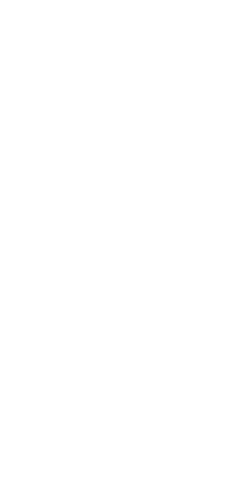

FJAC
コンサルティング
税務・会計・経営のプロフェッショナル
として、 お客様の未来に寄り添う。
税務・会計・経営のプロフェッショナル
として、 お客様の未来に寄り添う。
企業理念
会計・税務を通じて
実績と信頼のプロフェッショナルが、
あなたの経営を全面的に支えます。
私たちは、中小企業・個人事業主の皆さまを税務・会計を軸に総合的に支える
パートナーです。お客様にとって最良の選択を導き、共に成長していくことが
私たちの使命です。
「人に寄り添う心と、専門家としての誇りを両立させる」ことを理念に、
思いやりと親切心を持ち、わかりやすく丁寧な説明と対応を心がけています。
信頼される対話を通じて最適な解決を提案できる存在であり続けます。
お客様にとって身近で頼れる総合パートナーとして、共に未来へ進むことを
お約束いたします。
事業内容
当社には、大手監査法人出身の公認会計士や、東証プライム上場企業の財務部門でマネージャーを務めた経験を持つスペシャリストが多数在籍しています。高い専門知識と豊富な実務経験を活かし、複雑かつ高度な経営課題にも対応できる体制を整えています。
税務顧問では、日々の税務に関する不安や悩みを一つひとつ丁寧に解消し、お客様が安心して事業に専念できる環境を整えます。節税の可能性や税務対応については、単なるアドバイスにとどまらず、実際の実行まで責任を持ってサポートいたします。
また、税務調査などの突発的な対応が必要な場面でも、迅速かつ的確なサポートを行い、お客様にとって心強い味方となります。財務コンサルティングでは、会社の経営状況を数字の面から深く分析し、資金繰りや銀行融資、事業計画、事業承継といった具体的な課題に対して、実践的で効果的な提案を行います。
税務顧問で記帳代行では、日々の帳簿作成や経理作業をお任せいただくことで、手間を大幅に軽減し、正確で整理されたデータを提供します。
経営の状況を常に「見える化」し、安心して本業に集中できる環境を整えます。決算報告書の作成では、1年間の経営成績や財務状況を正確にまとめ、金融機関や関係先にも信頼される資料を作成します。わかりやすい説明を心がけ、経営判断に役立つ内容を提供します。
各種税務申告書の作成は、事業の正確な状況を反映し、法律に則って適正に行うことが求められます。私たちは法人税、所得税、消費税をはじめとする多様な申告業務において、豊富な知識と経験を活かし、確実で安心できる申告書を作成します。単に書類を作成するだけではなく、お客様の事業内容や状況を丁寧に把握し、最適な方法をご提案します。また、最新の税制や法改正に基づく適切なアドバイスを行い、リスクを未然に防ぐとともに、安心感のある税務対応を心がけています。
01
税務顧問では、日々の税務に関する不安や悩みを一つひとつ丁寧に解消し、お客様が安心して事業に専念できる環境を整えます。節税の可能性や税務対応については、単なるアドバイスにとどまらず、実際の実行まで責任を持ってサポートいたします。
また、税務調査などの突発的な対応が必要な場面でも、迅速かつ的確なサポートを行い、お客様にとって心強い味方となります。財務コンサルティングでは、会社の経営状況を数字の面から深く分析し、資金繰りや銀行融資、事業計画、事業承継といった具体的な課題に対して、実践的で効果的な提案を行います。
02
税務顧問で記帳代行では、日々の帳簿作成や経理作業をお任せいただくことで、手間を大幅に軽減し、正確で整理されたデータを提供します。
経営の状況を常に「見える化」し、安心して本業に集中できる環境を整えます。決算報告書の作成では、1年間の経営成績や財務状況を正確にまとめ、金融機関や関係先にも信頼される資料を作成します。わかりやすい説明を心がけ、経営判断に役立つ内容を提供します。
03
各種税務申告書の作成は、事業の正確な状況を反映し、法律に則って適正に行うことが求められます。私たちは法人税、所得税、消費税をはじめとする多様な申告業務において、豊富な知識と経験を活かし、確実で安心できる申告書を作成します。単に書類を作成するだけではなく、お客様の事業内容や状況を丁寧に把握し、最適な方法をご提案します。また、最新の税制や法改正に基づく適切なアドバイスを行い、リスクを未然に防ぐとともに、安心感のある税務対応を心がけています。
| 社名 | FJACコンサルティング |
|---|---|
| 住所 | 東京都世田谷区船橋6-27-1 アトラスシティ1017 |
| 代表者 | 平川絵里子 |
| 設立 | 平成27年10月5日 |
| 資本金 | 1,000万 |